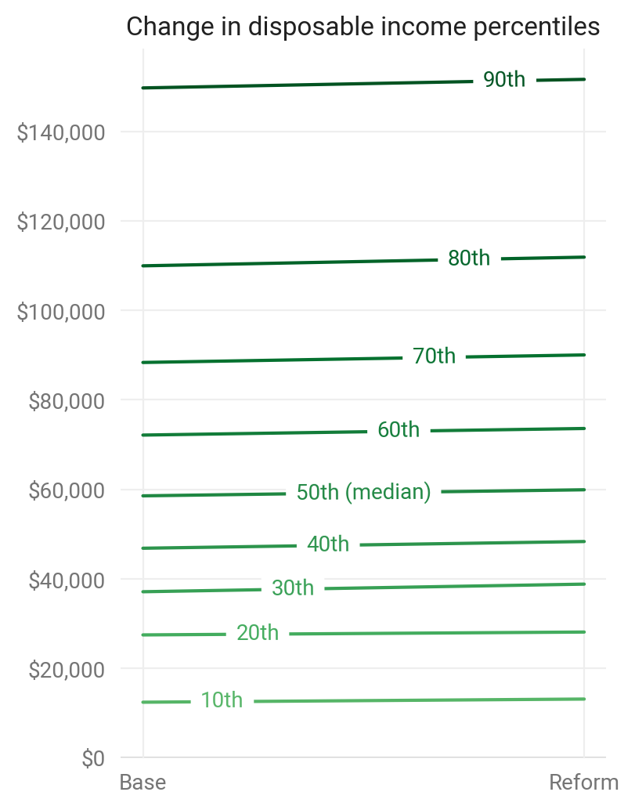

microdf demo¶
Setup¶
import numpy as np
import pandas as pd
import taxcalc as tc
import microdf as mdf
import matplotlib as mpl
import matplotlib.pyplot as plt
import seaborn as sns
---------------------------------------------------------------------------
ModuleNotFoundError Traceback (most recent call last)
<ipython-input-1-17833b0c9c0f> in <module>
2 import pandas as pd
3
----> 4 import taxcalc as tc
5 import microdf as mdf
6
ModuleNotFoundError: No module named 'taxcalc'
Chart options.
mdf.set_plot_style()
/home/mghenis/anaconda3/lib/python3.7/site-packages/microdf/style.py:24: MatplotlibDeprecationWarning:
The createFontList function was deprecated in Matplotlib 3.2 and will be removed two minor releases later. Use FontManager.addfont instead.
fm.fontManager.ttflist += fm.createFontList(["Roboto-Regular.ttf"])
Generate data¶
base = mdf.calc_df(group_vars=['expanded_income', 'MARS'],
metric_vars=['aftertax_income', 'XTOT'])
base.columns
Index(['e02400', 'mcare_ben', 'aftertax_income', 'ssi_ben', 'expanded_income',
'snap_ben', 'vet_ben', 'housing_ben', 's006', 'other_ben', 'e02300',
'mcaid_ben', 'XTOT', 'tanf_ben', 'MARS', 'wic_ben', 'market_income',
'bens', 'tax', 's006_m', 'aftertax_income_m', 'XTOT_m'],
dtype='object')
Define a reform that treats capital gains as ordinary income and sets the top marginal rate to 70%.
CG_REFORM = {
'CG_nodiff': {2019: True},
'II_rt7': {2019: 0.7}
}
reform = mdf.calc_df(reform=CG_REFORM, group_vars=['MARS'], group_n65=True,
metric_vars=['aftertax_income', 'XTOT'])
reform.columns
Index(['vet_ben', 's006', 'e02300', 'MARS', 'e02400', 'mcare_ben', 'ssi_ben',
'snap_ben', 'housing_ben', 'other_ben', 'aftertax_income',
'expanded_income', 'mcaid_ben', 'XTOT', 'tanf_ben', 'wic_ben',
'market_income', 'bens', 'tax', 'n65', 's006_m', 'aftertax_income_m',
'XTOT_m'],
dtype='object')
Calculate senior UBI.¶
Start with total revenue ($ billions).
new_rev_m = base.aftertax_income_m.sum() - reform.aftertax_income_m.sum()
new_rev_m / 1e3
326.110945495585
How many seniors are there?
mdf.add_weighted_metrics(reform, 'n65')
n65_total_m = reform.n65_m.sum()
n65_total_m
59.21619976999999
Divide.
senior_ubi = new_rev_m / reform.n65_m.sum()
senior_ubi
5507.123840473106
Add senior UBI to aftertax_income and recalculate¶
reform['ubi'] = senior_ubi * reform.n65
reform['aftertax_income'] = reform.aftertax_income + reform.ubi
mdf.add_weighted_metrics(reform, 'aftertax_income')
np.allclose(base.aftertax_income_m.sum(), reform.aftertax_income_m.sum())
True
Analyze¶
Gini, FPL, distributional impact chart
Change to Gini index¶
mdf.gini(base, 'aftertax_income', 's006')
0.5032911973267852
mdf.gini(reform, 'aftertax_income', 's006')
0.48752755152259336
Change to poverty rate¶
Add federal poverty line with mdf.fpl.
base['fpl'] = mdf.fpl(base.XTOT)
reform['fpl'] = mdf.fpl(reform.XTOT)
base['fpl_XTOT_m'] = np.where(base.aftertax_income < base.fpl,
base.XTOT_m, 0)
reform['fpl_XTOT_m'] = np.where(reform.aftertax_income < reform.fpl,
reform.XTOT_m, 0)
reform.fpl_XTOT_m.sum() / base.fpl_XTOT_m.sum() - 1
-0.022307196800575246
Add chart.
ax = mdf.quantile_chg_plot(base, reform, 'aftertax_income', 'aftertax_income',
'XTOT_m', 'XTOT_m')
